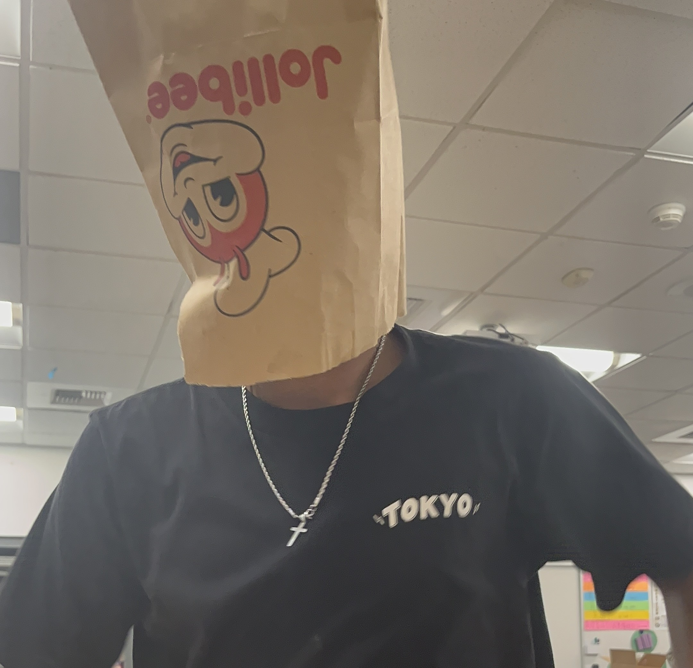

About the Creator
Yo welcome to my project hub
I am a passionate creator that loves to create many different things on many different platforms. Whether I am working with physical hardware, editing clips for videos and designing the next big video game. I want to make this website specifically dedicated towards projects I will make this summer and this hackclub, tracking my progress along the way.

My Creative Journey
Building software and designing spaces for the web is where I find genuine joy in translating little ideas into living web structures and fun and replayable apps/games. Each and every digital creation is like mapping out a unique a small, fragmented ideas together with my engineering and intentional visual systems to create a system of a great constellation that is a display of my hard work and my unique self.
Rather than simply positioning elements or writing standard layout logic, I focus heavily on creating sites that are highly responsive, accessible, and satisfying to navigate. This website plays the role of my digital workshop; a nice space where I can deploy web designs, catalog my development highlights, and post my creations for open source networks.
Why?
This project hub is not about bragging and my achievements its to show my progress and how it grew for just a dreamer to a successful person fufilling what that little 7-year-old boy always wanted. I have so many dreams and ambitions that I want to be better than everyone, not because of ego or pride but I want to be the best version of myself I can be. I dont want to be a dreamer I want to be the one thst takes action.